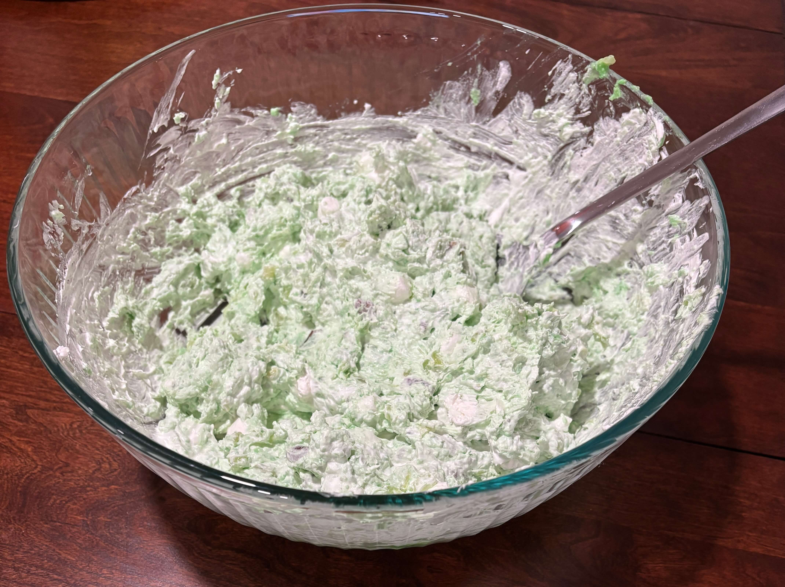

Home
Pistachio Salad

Makes 10 servings
Ingredients
- 3.4 oz pistachio Jell-O instant pudding mix
- 20 oz can crushed pineapple
- 1 cup miniature marshmallows
- 1/2 cup your favorites chopped nuts (pecans, walnuts)
- 8 oz container Cool Whip (lite-thawed)
- Cool Whip and cheeries for topping
Steps
- Combine pudding mix, pinneapple (with juice), marshmallows and nuts in a large bowl and mix well
- Blend in cool whip and chill until ready to serve
- Serve with whipped cream and cherries if desired